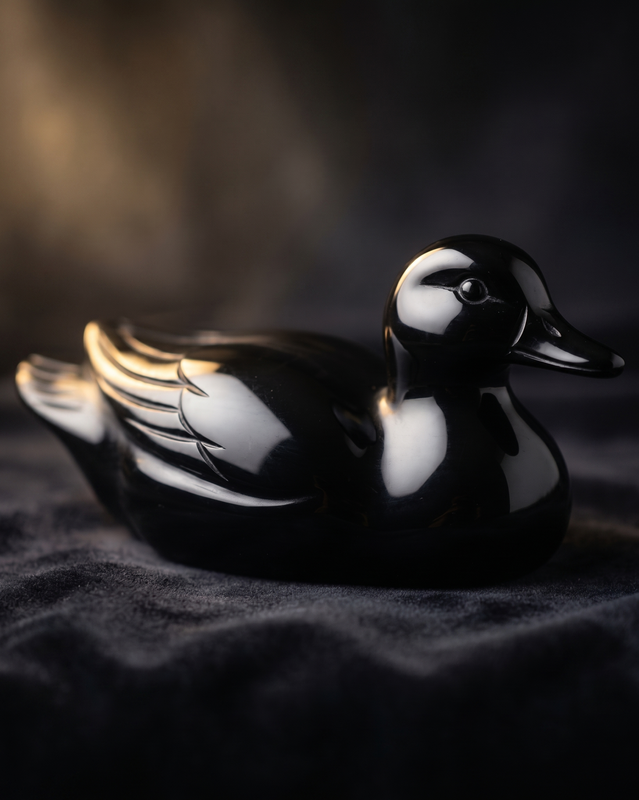
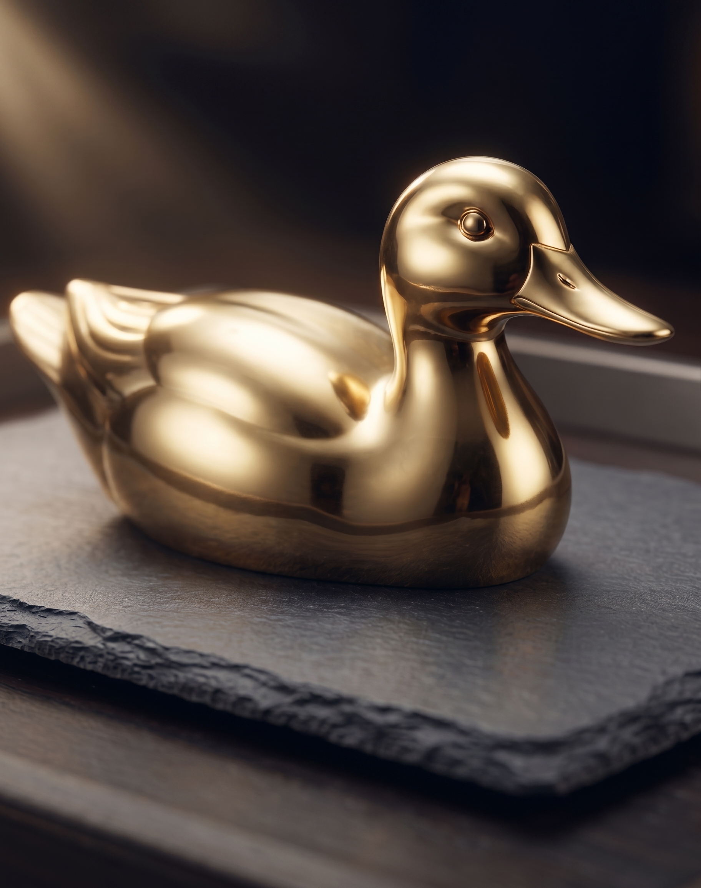
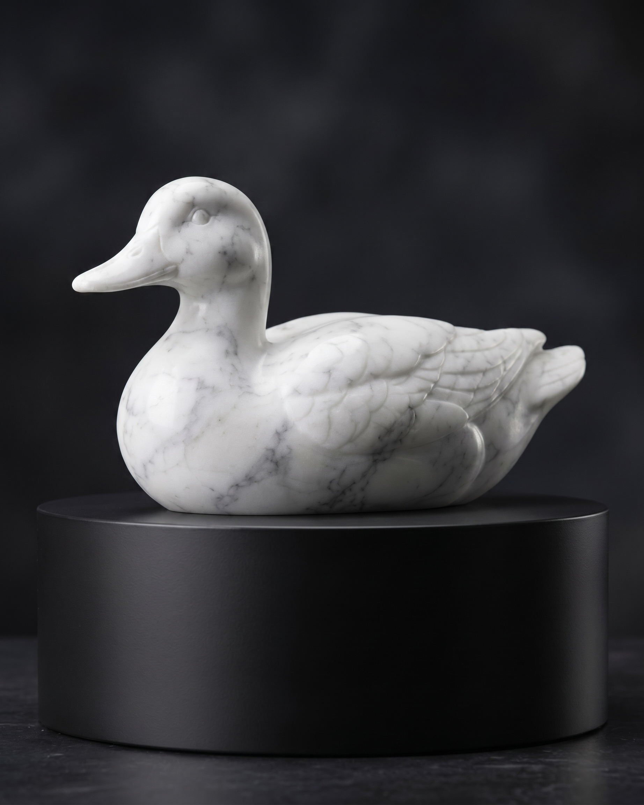
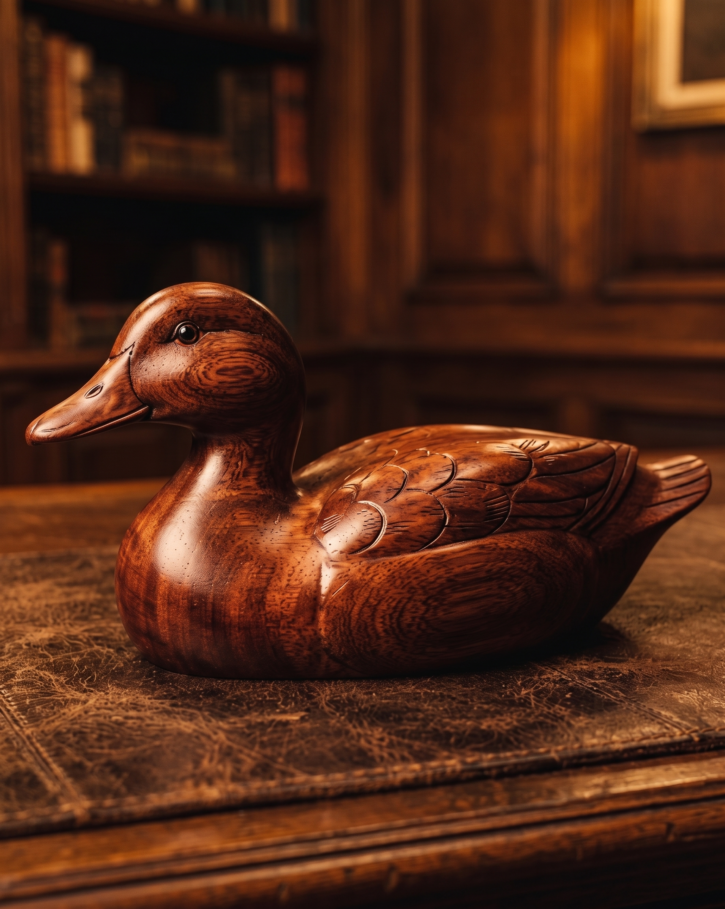
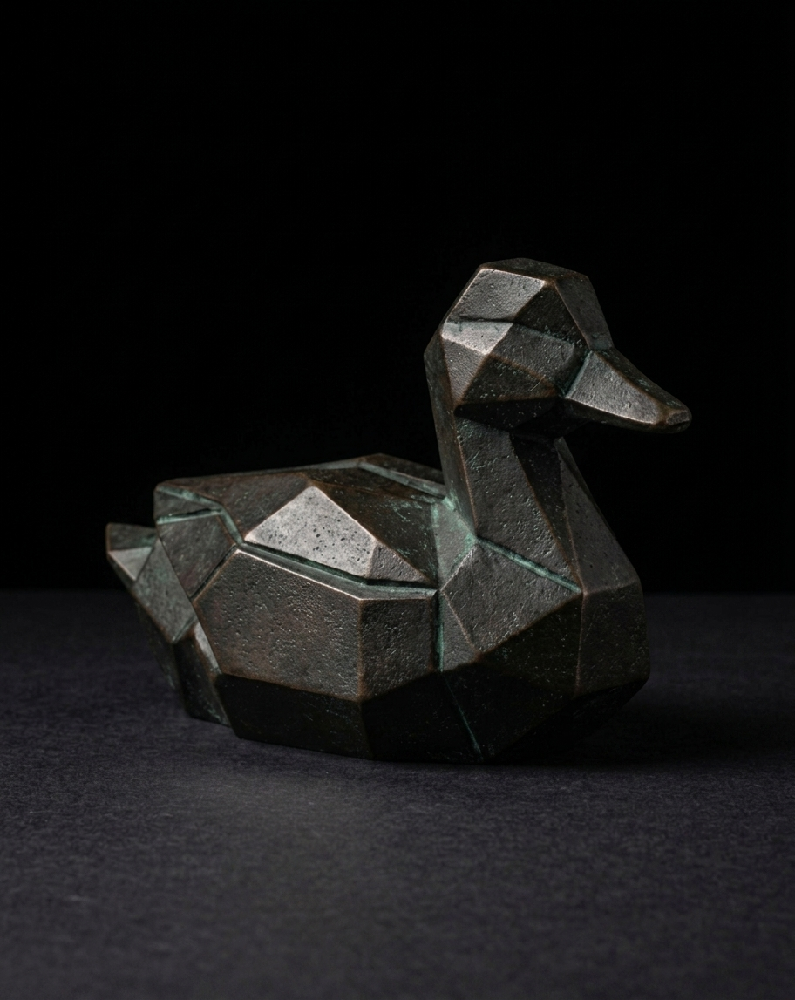
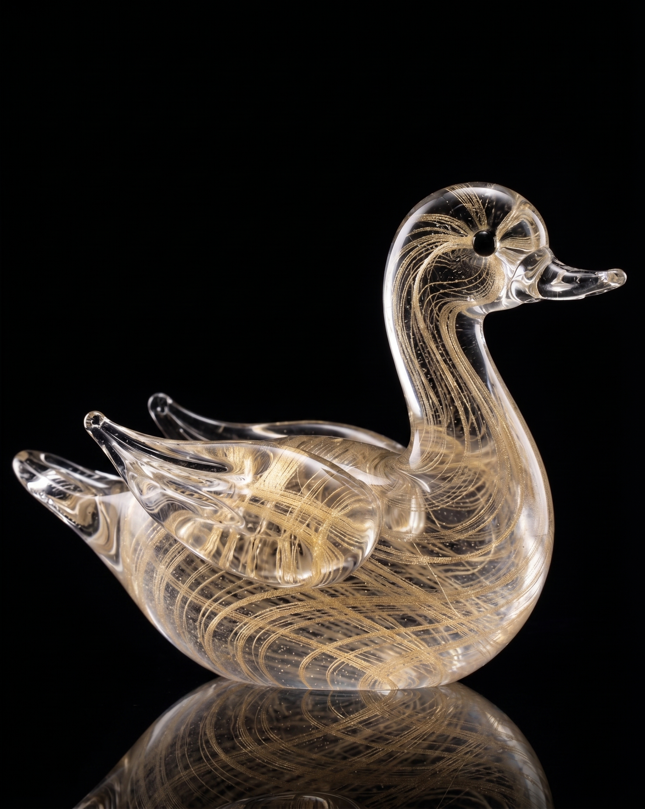

Tallado en un único bloque de obsidiana, refleja una profundidad serena y misteriosa.
Descubre nuestra selección meticulosamente curada de obras maestras artesanales. Cada pieza representa la cima de la artesanía y la pureza de los materiales.

Tallado en un único bloque de obsidiana, refleja una profundidad serena y misteriosa.

Fundida en latón macizo y recubierta con una fina lámina de oro de 24 quilates. Una pieza concebida para perdurar.

Esculpida en impecable mármol de Carrara, capturando la quietud de los cielos invernales.

Torneada a mano a partir de caoba recuperada con más de un siglo de antigüedad, con una calidez y una veta incomparables.

Un estudio de formas facetadas, fundido en bronce macizo y acabado con una pátina oscura única.

Cristal oscuro soplado a boca, atravesado por delicados hilos de oro puro.